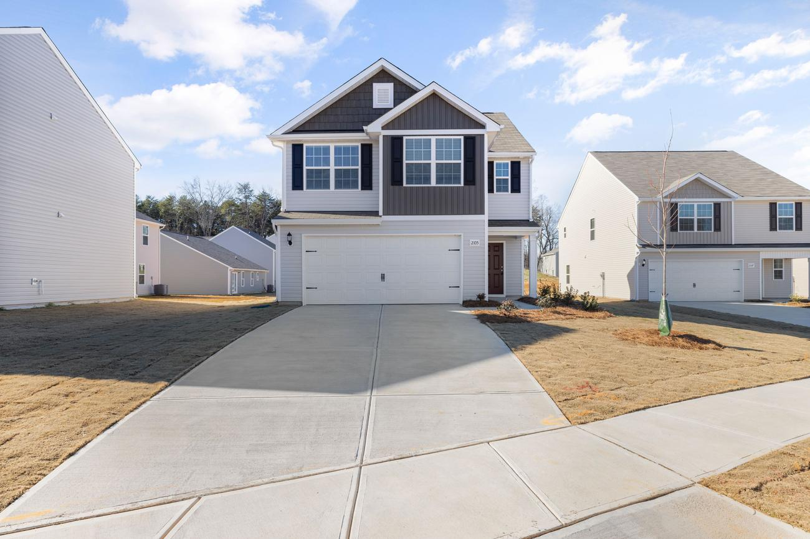

Concrete RV Pads in Logan, UT
Looking for a concrete RV pad in Logan? We’ll work to connect you with a licensed local contractor who can pour a thick, reinforced RV parking pad or driveway extension for your trailer, motorhome or boat, with free quotes anywhere in Cache Valley.

Concrete RV Pads in Logan, UT
A concrete RV pad gives your motorhome, travel trailer, fifth wheel, boat or toy hauler a level, solid place to park that won't rut or turn to mud every spring. Cache County Concrete is a free referral service that connects Logan and Cache Valley homeowners with licensed local contractors who build RV pads, RV parking pads and driveway extensions. A well-built pad keeps your RV level for leveling jacks, sheds snowmelt away from the tires, and adds usable parking to your lot.
Concrete RV Pad Cost in Logan
Most installed concrete RV pads run about $6 to $12 per square foot for a 6-inch reinforced slab, and more for 8-inch pads, tear-out, long access runs or hookups. For example, a 10 by 40 foot pad for a travel trailer (400 sq ft) often runs about $2,400 to $5,000. A 12 by 45 foot pad for a fifth wheel or gas Class A (540 sq ft) is often $3,500 to $7,000. A 14 by 55 foot, 8-inch pad for a diesel pusher or large toy hauler (770 sq ft) often runs $5,500 to $9,000. Adding conduit, a water spigot or a sewer cleanout usually adds $300 to $1,200 before electrician work. Last updated October 2026. These are general planning ranges, so get free written quotes from local contractors for your actual price. For other projects, see the Logan concrete cost guide.
RV Pad Thickness and Size
Thickness. An RV sits in the same spot for months, so the slab carries a lot of weight in one place for a long time. That is why RV pads are thicker than a standard 4-inch driveway. Plan on at least 6 inches of air-entrained concrete with rebar for travel trailers, fifth wheels and gas motorhomes, and 8 inches or thickened edges for diesel pushers and heavy toy haulers. Ask for 4,000 PSI or stronger concrete to handle Cache Valley freeze-thaw and road salt dripping off the RV.
Size. A common rule is the RV's length plus 5 to 10 feet, and 12 to 14 feet wide, so you can open slide-outs and awnings and walk around the rig. Popular sizes are 10 by 40, 12 by 45 and 14 by 55 feet. Think about how you will back in. A wider apron or a flared entrance makes backing a long trailer much easier, and so does a pad that lines up straight with the driveway.
How an RV Pad Is Built
- Layout and permits. The contractor confirms placement, setbacks, drainage and any curb-cut or HOA rules.
- Excavation. Topsoil and soft ground are removed. Logan clay soils often need extra digging.
- Base. Six inches or more of gravel is spread and compacted in layers so the pad won't settle under the RV.
- Forms, steel and hookups. Forms are set with a slight slope for drainage, rebar is placed, and conduit or plumbing is stubbed in.
- Pour and finish. The concrete gets a broom finish for traction, with control joints cut to control cracking.
- Cure. Most contractors recommend waiting about 7 days before parking a trailer and closer to 28 days before parking a heavy motorhome.
RV Pad vs. Driveway Extension
If you need space for a second car, a work truck or a small utility trailer, a driveway extension at standard driveway thickness may be enough. See driveway extensions in Logan. If a heavy RV, boat or camper will be parked for long periods, build it as a true RV pad with the thicker slab and stronger base. Many Logan homeowners do both at once, widening the driveway and running a 6-inch pad along the side of the house to the backyard, which saves on mobilization and gives one clean look.
Concrete vs. Gravel RV Pads
A gravel RV pad is cheaper, often a few dollars per square foot, but in Cache Valley it tends to rut under the jacks, gets muddy in spring, needs regular regrading, and lets weeds grow. A concrete RV parking pad costs more up front but stays level for decades, drains cleanly, plows easily in winter, and looks finished, which matters for resale and HOA rules. If budget is tight, ask about a concrete pad with a gravel apron you can pour later.
RV Parking Rules in Logan and Cache Valley
Before you build, check where you are allowed to park an RV. Logan City and nearby towns like North Logan, Hyde Park, River Heights, Providence and Smithfield have their own rules about parking RVs in front yards, side yards and on the street, and many subdivisions have HOA rules too. A new curb cut or a wider driveway approach usually needs a Logan City right-of-way permit built to city specs. A good contractor will help you confirm this, but the final responsibility is the homeowner's.
Logan Ground Conditions: Why Base Prep Matters Here
Logan sits around 4,500 feet on the floor of Cache Valley, and the ground changes a lot from one neighborhood to the next. The benches on the east side, up toward the university, Hyde Park and River Heights, tend to have rocky, gravelly soil that drains well but can need more excavation. Lower ground west of Main Street and out toward the Logan River bottoms often has silty or clay soil that holds water, and that is where poorly built slabs heave and settle. Frost here reaches roughly 30 inches deep, and slabs go through dozens of freeze-thaw cycles each winter. Long rural driveways in Smithfield, Hyrum and Nibley add length, grading and drainage work. These are the reasons a good Logan contractor looks at your site before pricing it, and why the base depth, compaction and drainage plan in a quote matter as much as the concrete itself.
How to Compare Written Concrete Quotes in Logan
Once you have two or three written quotes from local contractors, compare them line by line instead of looking only at the total. A lower number often means something was left out. Check that each quote states the gravel base depth and how it will be compacted, the slab thickness, and the reinforcement (rebar size and spacing, wire mesh or fiber). Look for an air-entrained mix, which is what holds up to Cache Valley freeze-thaw, along with the strength (usually 4,000 PSI or more for exterior work). The quote should also cover control joint spacing, the finish, tear-out and haul-off of old concrete, any permit or city apron work, cleanup, and the written warranty. If one quote leaves an item blank, ask that contractor to add it in writing so you are comparing the same job. Homeowners in Logan, River Heights, Hyde Park, North Logan and Providence all get the same free referral and the same advice: the best value is the quote that spells out the work, not the cheapest one.
Concrete RV Pads in Logan, UT FAQ
How thick should a concrete RV pad be?
Most RV pads in Logan should be at least 6 inches thick with rebar over a compacted gravel base. Heavy diesel pushers and large fifth wheels may need 8 inches or thickened edges.
How much does a concrete RV pad cost?
Most installed RV pads run roughly $6 to $12 per square foot or more. A 12 by 45 foot pad is often $3,500 to $7,000, and larger 14 by 55 foot pads often run $5,500 to $9,000. Last updated October 2026.
What size RV pad do I need?
A common rule is the RV length plus 5 to 10 feet, and 12 to 14 feet wide so you can open slide-outs and walk around. Many Logan homeowners choose 12 by 40 to 14 by 55 feet.
Do I need a permit for an RV pad in Logan?
A pad on your own lot often doesn't need a building permit, but a new curb cut or approach does, and Logan City and HOAs have rules about where RVs can park. Confirm with the city and your HOA before building.
Is concrete better than gravel for an RV pad?
Gravel costs less, but it ruts, gets muddy in Cache Valley springs, and lets weeds grow. Concrete costs more up front but stays level, sheds water, and lasts decades.
Can I add electrical or sewer hookups to my RV pad?
Yes. Conduit for a 30 or 50 amp outlet, a water spigot or a sewer cleanout is usually stubbed in before the pour, often adding $300 to $1,200 plus electrician work.
Please note: Cache County Concrete is a free lead-referral and information service, not a licensed contractor, and does not perform concrete work. All quotes and work are provided by independent, licensed local contractors. Verify licensing and insurance directly with the contractor before any work begins.
Ready for a Concrete RV Pad?
Tell us your RV size and where you want to park it, and we’ll work to connect you with a licensed local contractor in Cache Valley for a free, no-obligation quote.